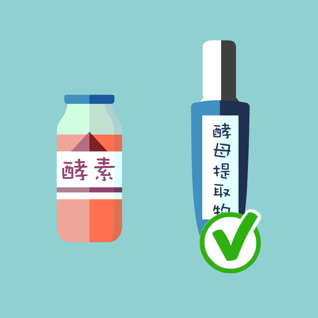

都说酵母可以护肤，究竟是不是伪科学？
引言：“酵母护肤”，这种听起来像存在于朋友圈的科学，是不是真的科学有效？酵母护肤的奥义又是什么？应该如何利用它？
“酵母护肤”，乍听起来像种只存在于朋友圈的科学，概念逾炒逾热，营销鼓吹铺天盖地，然而普通消费者始终与科学和真相始终隔着一层纱：“酵母护肤”是科学的吗？它的奥义究竟是什么？
酵母可以用来护肤，是真的吗？
其实关于酵母菌的利用，人们并不陌生。早在8000年前，中世纪的人们就知道利用酵母菌的活性物质进行酿酒，古巴比伦人使用啤酒和酵母来帮助伤口愈合，希腊妇女也常用酿酒发酵产生的泡沫来擦洗脸部和身体，以此来保持皮肤的健康美丽。

所以酵母护肤，是有其历史渊源存在的。但要透彻了解酵母护肤的原理，首先你得搞清楚它与它的近亲——酵素的区别。
酵素——它其实是一种酶，是一种高效率的生物催化剂，人的体内大约有5000种催化剂来支撑身体里发生的各种活动。然而，科学家无情地告诉我们：人体根本不能吸收外来酵素！酵素作为一种蛋白质，口服的话，酵素们还没来得及发挥作用就已经被消化掉了。而试图通过敷、涂等外用方式起到 “抗老”的作用更是非常荒唐的。
酵母提取物——它是从天然酵母中提取的一种活性物。酵母本身是一种真菌细胞，除了氨基酸、核苷酸，它还有单糖，二糖，以及矿物质，维生素等等一大堆有益成分。酵母发酵的代谢产物，本身就有可利用价值，同时也可以作为护肤的材料。有了这些，我们理论上推断，酵母对于护肤是有益的。我们开始设想若能够对酵母细胞进行利用与控制，使其在不同的生存条件下产生不同的代谢物，这些代谢物则有可能成为皮肤抗衰老、美白等的核心原料。
酵母这么神奇，但用完后皮肤反而“不高兴”？
以上对酵母成分的分析，我们知道酵母提取液是一种对皮肤非常有益的成份，但为什么市场上会出现种种过敏、发炎等负面反馈？
“活酵母”直接加入到护肤产品中是很危险的。酵母是真菌的一种，如不对其进行严格的处理，直接拿含有活酵母菌的产品糊一脸，就像把黄瓜水果等直接敷在脸上，虽然听起来很自然健康，而事实是把自己的脸部皮肤当成一个天然培养皿，想想都知道结局了：皮肤上的菌群超标，当然有害无益。
作为一种安全营养高效的活性物，护肤品中的酵母成分一定是要经过严格的提取、测试和评估。比如兰蔻小黑瓶中的酵母精华，其提取过程模拟天然发酵，借助尖端生物提取科技（超声科技&酶反应），确保酵母精华的稳定性和安全性。
护肤品里用到的酵母精华都一样嘛？
理论上说，护肤品中最常见的酵母类成分有三类，一是酵母胞溶产物提取物，二是酵母滤液提取物，另外还有一种是酵母发酵过滤裂解液。听起来是不是很头晕？没关系，其实各品牌均有自己的侧重点，就拿兰蔻小黑瓶来说，就使用了两大酵母精华：
一种是具有强大“修护”功能的酵母成分，可以称之为修护酵母。这种精华成分中含有非常丰富的 B族维生素、微量元素、叶酸和麦角甾醇，所以能提高皮肤血液循环和新陈代谢，换言之，这种成分的存在可以起到清洁毛孔、抗老化和消除细纹干纹的作用，让已经有“受损”的皮肤重新恢复活力。
第二种成分，它既有酵母细胞本身的营养物质提取，又有发酵后代谢物质的过滤，其功能更加全面，它可以称为“强韧”酵母，它使用的是具有抗炎能力的双歧杆菌作为原料进行一系列的发酵和提取，除了强有力的消炎作用之外，它对皮肤最明显的改善是激活胶原蛋白使皮肤充盈饱满。
这两大酵母精华分摊了干燥、毛孔粗大、敏感泛红、细纹干纹、痘印沉积等五大肌肤问题，让肌底更健康，使用七天就会有肉眼可见的肤质改变。
理论分析Get，能实践证明吗？
我们都知道，想要让酵母提取物在皮肤上达到更好的效果，护肤品的渗透能力非常重要。而兰蔻小黑瓶的渗透能力如何呢？不如来看一下这个小实验。
实验用玫瑰花瓣来模拟人类的皮肤，要知道花瓣表面比我们皮肤毛孔更为细致。
分别将水和小黑瓶精华液滴在两片花瓣上。
等待一分钟，小黑瓶精华肌底液已经吸收大半，水滴无明显变化。
2分钟后，水滴一侧无明显变化，而小黑瓶精华液已经全部吸收。
天然酵母本身还是一种很强的抗氧化物，其谷胱甘肽、维生素等有效成分都有抗氧化及延缓衰老的作用。兰蔻小黑瓶蕴含两大酵母精华，那其抗氧化效果如何呢？
取两片新鲜的苹果，其中一片浸润小黑瓶精华肌底液，之后静置于空气中11分钟。
非常明显的看出左侧苹果氧化的十分严重，而浸润过小黑瓶精华肌底液的苹果却没有被氧化的情况出现。
看了这两个实验之后是不是对小黑瓶有了更直观的认识？那么彩蛋来了哦！ 现在到官网申请试用，不仅可以有体验小黑瓶的“黑科技”成分，还会收到一个酷炫的全息投影黑科技可以玩，看一下官方的演示视频，分分钟被迷住！
炫不炫！现在就去申领试用↓